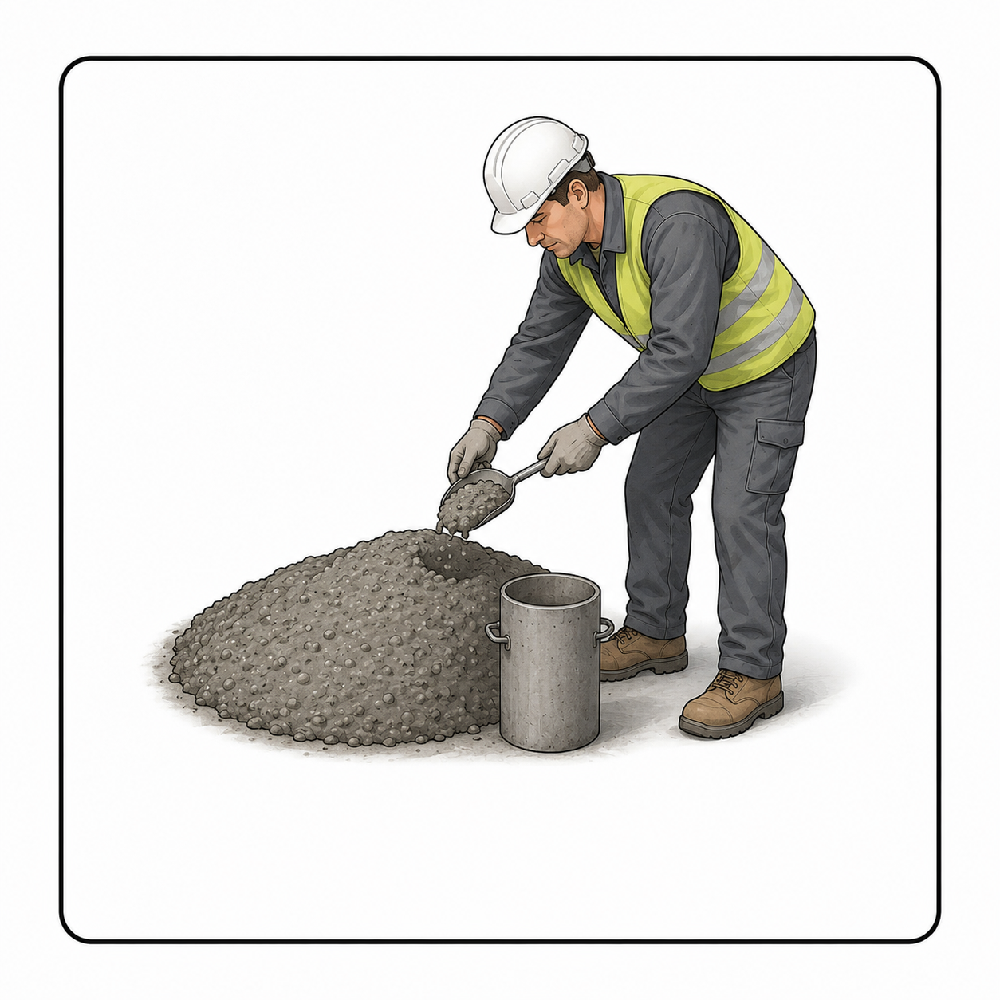

Choisissez un module
Coulage béton
Bassin de conservation
Profil opérateur
Opérateur actif — il signe toutes vos actions (fiches, répartition, sorties, essais, déchets) :
Connexion opérateur
Sélectionnez votre nom pour commencer. Vos actions seront signées avec cet opérateur.
Gestion des opérateurs
Liste des opérateurs autorisés. L'opérateur « Actif » signe les actions. Stockage local pour l'instant (synchronisation cloud prévue).
➕ Ajouter un opérateur
À répartir
Fiches validées comportant des éprouvettes, pas encore réparties au bassin.
Bassin virtuel
📥 Lots sortis du bassin — en attente d'essai
Ces lots ne sont plus dans le bassin : ils sèchent / sont préparés avant l'essai (délai 24 h conseillé).
Gestion déchets
Éprouvettes cassées après essai de compression. L'historique des essais n'est pas affecté.
⚙️ Paramètres
🚛 Confirmer une évacuation
📜 Historique des évacuations
Test de compression
À tester
Lots sortis du bassin pour essai. Saisissez les résultats d'écrasement.
⏳ En séchage (délai 24 h hors bassin)
Ces lots viennent de sortir du bassin. Ils doivent rester 24 h hors bassin avant l'essai. Le passage anticipé est possible mais exceptionnel (motif obligatoire).
Historique des essais
Nouveau coulage
Fiche
Projet 🔒 verrouillé
Ouvrage(s) coulé(s)
Choisissez la (les) famille(s), puis touchez les ouvrages concernés.
Bloc / Étage / Partie (facultatif)
Malaxeur 01

Prélèvement d'échantillonsAvez-vous effectué un prélèvement d'échantillons de béton sur ce malaxeur / toupie ?
Type de moule — touchez Cube, Cylindre, ou les deux (= prélèvement mixte) :
📊 Données du malaxeur / toupie
📄 Formulation / Centrale
Même formulation / centrale que le malaxeur précédent ?
La photo est compressée et stockée localement.
Récapitulatif
Prélèvements réalisés
Les prélèvements sont déclarés pendant la saisie de chaque malaxeur. Codification : RÉF-E1, RÉF-E2…
⚠️ Signaler un problème / anomalie
La validation et le partage au bureau se font ensuite depuis le Répertoire des coulages.
Répertoire
Mise à jour projet
Fichier Excel client.xlsx du bureau : feuilles CLIENTS et PROJETS (jointure par ClientID). Seuls les clients et projets actifs sont proposés à la saisie.
🧪 Contrôle interne (V2.01)
Crée des données fictives marquées DEMO- pour tester rapidement les badges, le bassin et le module de compression. Sans effet sur vos vraies fiches.